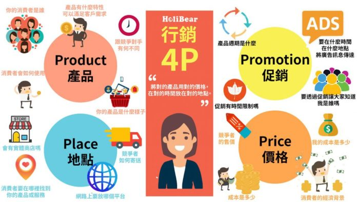

行銷4P的目的是——〝將對的產品用對的價格，在對的時間放在對的地點〞。
雖然聽起來簡單，但這個背後需要做非常多的研究，如果有一個元素不對，那麼整個產品線或是定位就會瓦解，導致公司損失慘重。
行銷4P是什麼呢？在這個大數據的時代，行銷不再是海底撈針，而是針對目標市場進行最有效的行銷策略，將資源集中在最有效益的地方。
市場上已經發展出行銷7P甚至4C的策略模組，但是行銷4P仍然是一個好的著手點，幫助你規劃新產品，或是評量現有的產品線。

- 消費者的經濟背景？
- 這個產品/服務對消費者的價值是什麼？
- 消費者對價格敏感嗎？
- 這個市場的消費者可接受的價格範圍是什麼？
- 產品端
- 我的成本是多少？
- 小幅度的降價是否讓我瓜分更大的市場？
- 小幅度的調升戶步會在消費者可接受的範圍，進而為我創造更多利潤
- 競爭者的售價是多少？